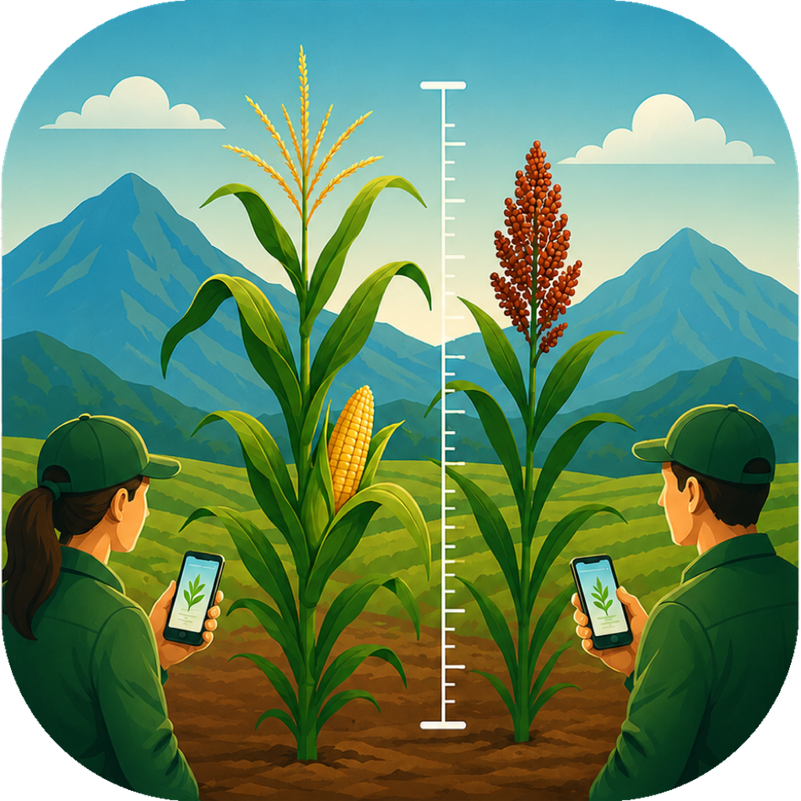
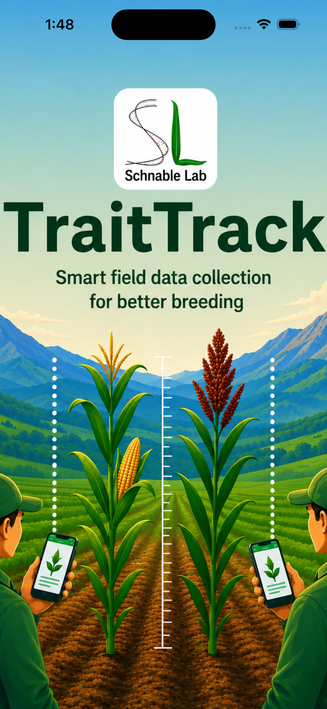
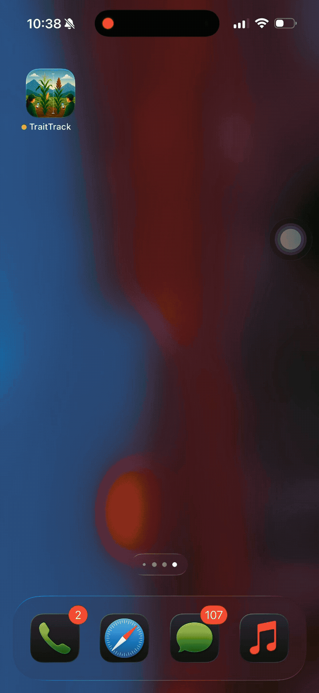
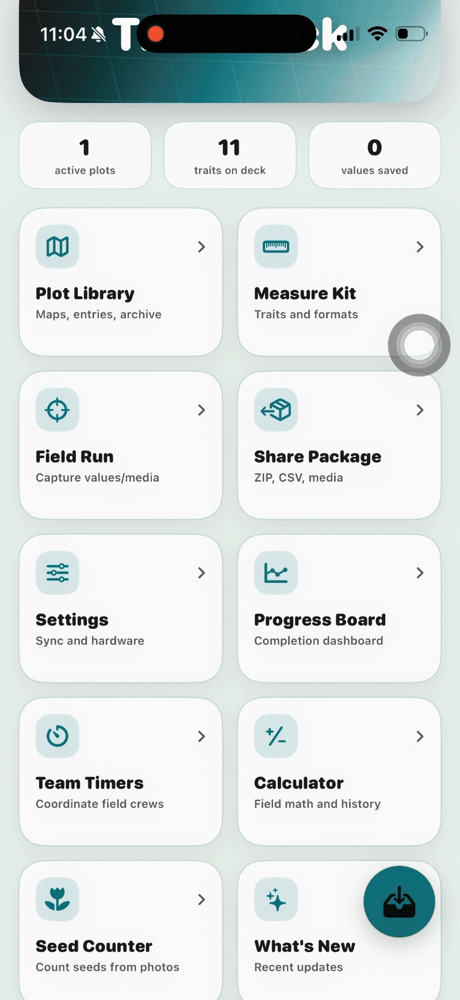
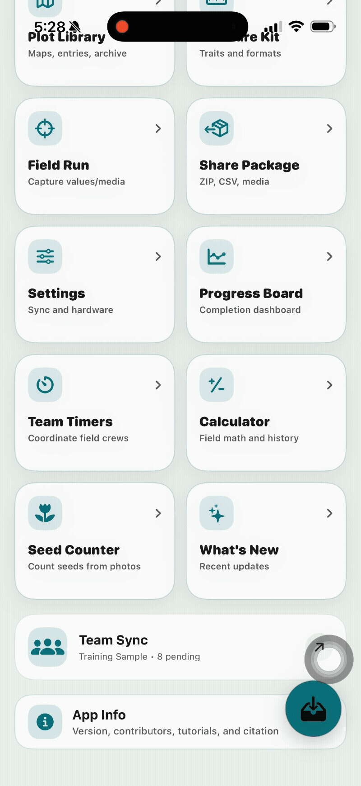
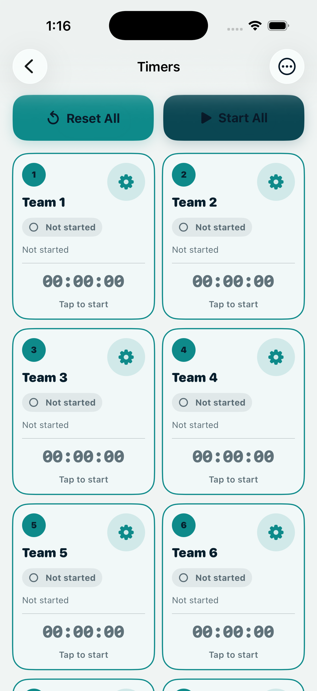
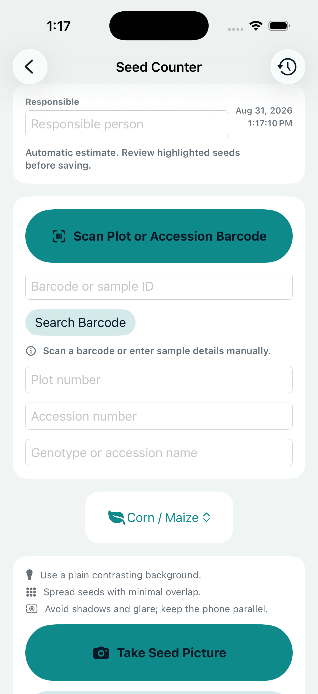
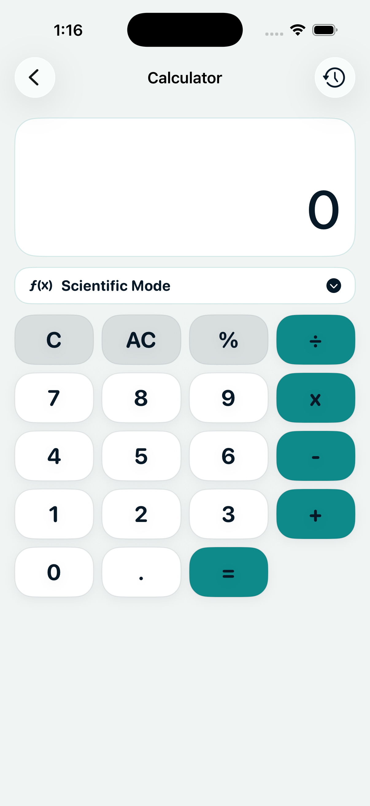
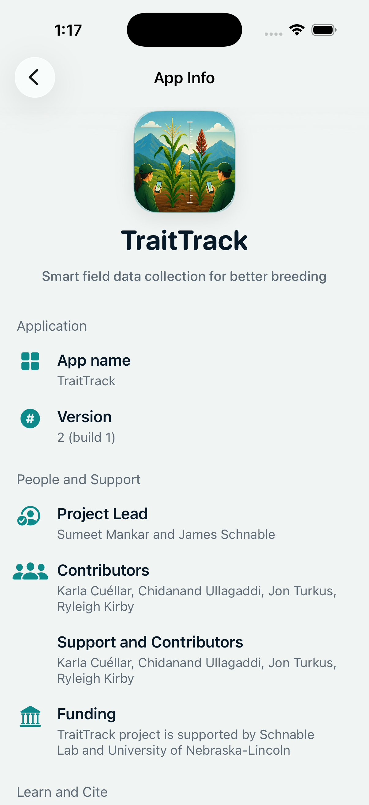

Know where you are
Plots can include identifiers such as plot_id,
row, column, plot,
replicate, germplasm, and
pedigree.

TraitTrack SupportTRAITRACK GUIDE
TraitTrack is a collaborative field-phenotyping application designed to help researchers collect, synchronize, manage, and review plant trait data directly during field experiments.

No tutorial sections match that search.
What the app does
TraitTrack is an iPhone and iPad app for plant phenotyping. It helps you import a field map, choose traits, walk through plots, collect values and media, and export or sync the finished observations.
Plots can include identifiers such as plot_id,
row, column, plot,
replicate, germplasm, and
pedigree.
Traits can be numeric, categorical, percent, date, boolean, text, photo, counter, location, angle, audio, video, disease rating, GNSS, and more.
The Field Run screen keeps the current plot and current trait visible while you move through the field.
Use a personal local project for solo work, or connect a team workspace when several devices need to sync the same project.
Step 1
Download the app, open it once, and confirm the main menu loads before you go to the field.

Tap the App Store button above, then install TraitTrack on the iPhone you will use for data collection.
Launch the app while you still have a good internet connection. Confirm that the main menu opens.
Allow camera access for photos and barcode scanning, location access for location traits, and microphone access for voice notes when your project uses them.
Beginner path
Project setup
A personal project stays on your device until you export it manually. This is the simplest choice for practice, training, and single-person collection.
Go to Plot Library. Choose an existing training field or import a field file. A good field file has one row per plot and columns such as plot ID, row, range or column, germplasm, and pedigree.
Go to Measure Kit. Select the traits you want to collect. The selected order is the order used in Field Run.
Open Field Run. The app will show the current plot, the current trait, and the input control for that trait type.
Team setup
A collaborated project connects multiple devices to the same TraitTrack sync backend. Use this when a field crew is collecting the same project together.

Open Team Sync or Settings > Team Workspace. Enter the TraitTrack sync API URL from the project owner, then use Check Backend.
Use Sign In to Collaboration. Confirm the collector name and device label are correct because they appear in team records and exports.
The owner creates the shared project and invite. Teammates scan the invite QR code or paste the invite code.
Tap Sync Now once. While the app is open, active devices sync periodically and send observations, media references, and prepared exports through the team workspace.
Field preparation
Plot Library is where your field maps live. Use it to open a field, inspect imported columns, rename or color a library, and start a Field Run.

plot_id.
New field
A field is the list of plots or observation units you will visit during collection. In TraitTrack, you can import an existing field file or build a simple field layout directly in the app.
From the main menu, tap Plot Library. This is where TraitTrack keeps imported fields, archived fields, and field actions.
Use the round + button. TraitTrack lets you add a field from a local file, iCloud Drive, BrAPI when it is enabled, or a new field made inside the app.
Choose a CSV, text, or spreadsheet file. When TraitTrack shows
the import options, select the worksheet if needed and choose
the column that uniquely identifies each plot, such as
plot_id.
Choose Create New, enter a field name, set the number of rows and columns, then pick the start corner, travel direction, and collection pattern.
Check the preview grid before saving. The preview helps you confirm the plot order before TraitTrack adds the field to Plot Library.
Trait preparation
Measure Kit controls which traits appear during collection. Keep this screen simple before a field day: only turn on the traits your crew should collect.

Trait creation
Create a trait when the project needs a measurement that is not already in Measure Kit.
From the main menu, tap Measure Kit, then tap the green + button.
Pick the input style that matches the measurement. For example, use Numeric for plant height, Categorical for color, Percent for lodging, Date for flowering, Boolean for insect damage, Text for notes, Photo for pictures, and Counter for plants.
Use short names that make sense in the field, such as
height, color, lodging,
flowering, notes, or
plants.
For measured values, add units such as cm or degrees. For categorical traits, enter the allowed choices before collection starts.
Return to Field Run and enter one practice value. Confirm the trait appears in the right order and uses the right input control.
Collect data
Field Run is the screen you use while standing in the field. It shows the current plot, the active trait, the value entry area, plot movement controls, record tools, and review actions.
Enter observations
Tap the value field, enter the number, then save. Use units consistently, such as cm for height or degrees for angle.
Select the category or yes/no value that matches the plot. Define categories before the field day so everyone scores the same way.
Use the date picker or date controls for flowering and timing traits. The date controls adjust and save the date without moving you to another trait.
Capture supporting media from the record tools or media trait input. Add notes when a value needs explanation.
Finish a plot
Check progress
Progress Board is a read-only dashboard for checking the current project before syncing, exporting, or leaving the field.

App setup
Settings controls identity, collaboration, field tools, interface choices, movement behavior, navigation, audio feedback, BrAPI links, diagnostics, storage, and preview tools.

Collector Identity: collector name, check-in, and device label.
Team Workspace: backend URL, sign-in, invites, sync queue, and shared media.
Field Movement: auto-advance, plot movement, arrow lanes, and volume buttons.
Breeding API Links: BrAPI server profiles, imports, connection tests, studies, variables, and observations.
Data Storage: backup, restore, and clear local workspace.
Other screens

Create timers for crews or field tasks. Start timers one by one or all together.

Photograph a seed sample, review highlighted seeds, and save a count with sample identifiers.

Run quick field calculations and review calculation history.

Read version details, contributor information, tutorials, and citation references.
Quick reference
Support
Use the project support page when you need help with installation, field setup, data collection, exports, or team sync.
Visit the TraitTrack repository for project files, updates, and support information.
github.com/sumeetmankar171/TraitTrackShare the app version, device model, iOS version, project name, the screen you were using, and the steps that caused the issue.
Citation
If TraitTrack supports your field work, include the app citation in methods, acknowledgments, or project documentation.
TraitTrack. (2026). TraitTrack: Smart field data collection for better breeding (Version 2).